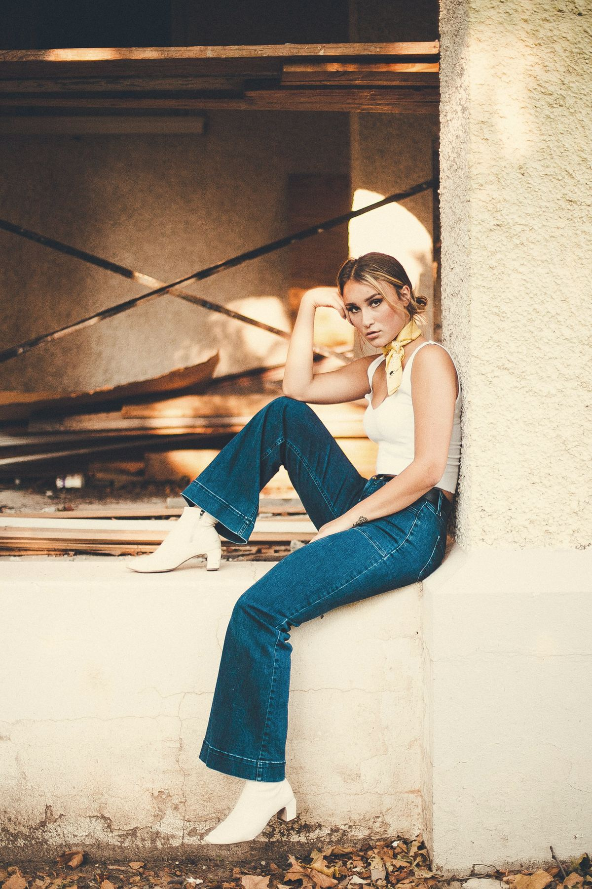
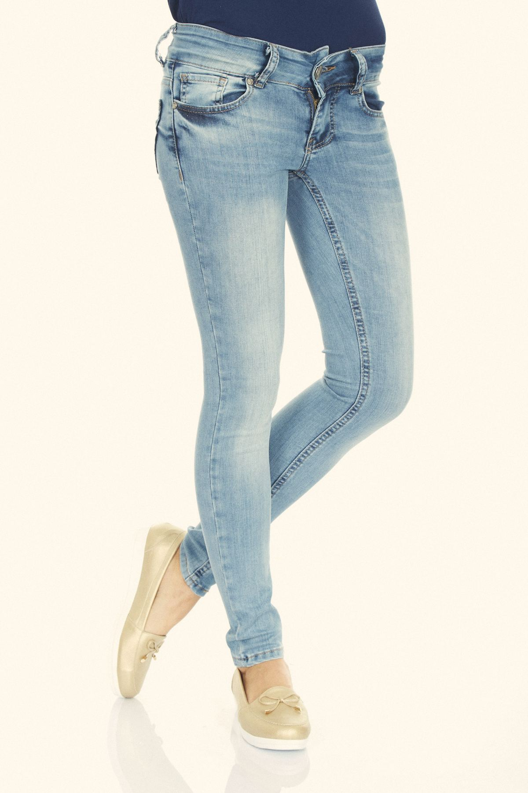
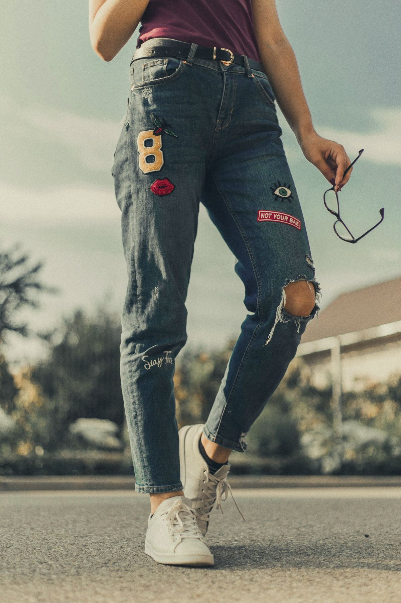
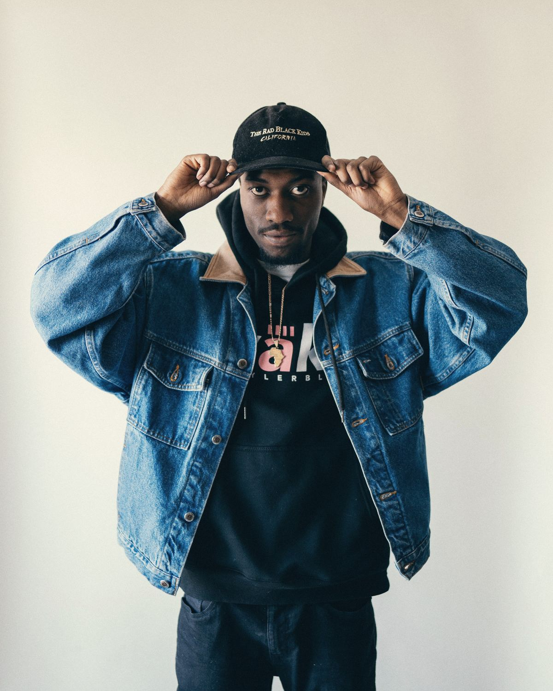
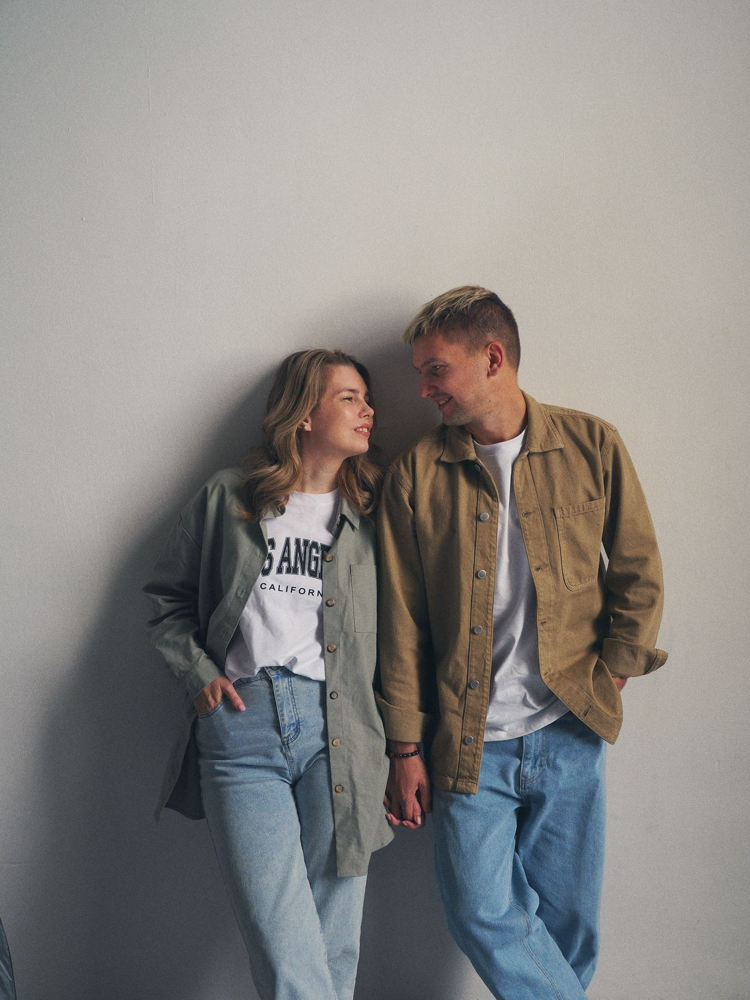

Look 01
Weit & lässig
Locker geschnitten wie eine Boyfriend-Jeans – bequem und trotzdem stylish.
Das ganze Jahr: Einzelstücke zum halben Preis – nur im Laden

Wir lieben Jeans
Die Jeans gehört zu den meistverkauften Kleidungsstücken der Welt – und bei uns dreht sich seit über 30 Jahren alles um sie.

Unsere Geschichte
Jeans tragen sich durch alle Kulturen und bedeuten Freiheit – auch beim Styling. Angefangen beim relaxten Boyfriend-Stil über trendige Jeans mit hohem Bund bis hin zu knöchellangen Girlfriend-Hosen: Bei uns findest du für jeden Anlass den passenden Look.
Was uns antreibt? Dass du dich in deiner Jeans wohlfühlst. Deshalb beraten wir kompetent, ehrlich und mit Liebe zum Detail – so lange, bis es passt.
— Dein Team von Jeans House

Unsere Philosophie
Ob eine Jeans passt, merkst du erst beim Anziehen. Deshalb setzen wir auf das, was kein Online-Shop kann: anfassen, anprobieren, ehrlich beraten werden.
Was uns wichtig ist
Looks
Sechs Ideen zum Anprobieren – im Laden zeigen wir dir noch viel mehr.
Look 01
Locker geschnitten wie eine Boyfriend-Jeans – bequem und trotzdem stylish.

Look 02
Figurbetont in heller Waschung – passt zu Sneakern genauso wie zu Boots.

Look 03
Etwas kürzer wie eine Girlfriend-Jeans – lässig im Alltag, schick am Abend.

Look 04
Der Klassiker über allem – vom Frühling bis in den späten Herbst.

Look 05
Zwei Jacken, zwei Waschungen – Denim on Denim, aber entspannt.

Look 06
Gerade Jeans, robuste Jacke – von Levi's 501 bis Wrangler Texas.
Jeans für alle



Warum Jeans House?
Du suchst einen treuen Begleiter für deinen Kleiderschrank? Wir beraten dich gern – ruf uns an unter 040 – 68 91 58 30.
01
Wir nehmen uns Zeit, hören zu und sagen ehrlich, was dir steht – ganz ohne Kaufdruck.
02
Seit über drei Jahrzehnten dreht sich bei uns alles um Jeans. Wir kennen jeden Schnitt.
03
15 Marken, viele Modelle und Waschungen – auch in Überlänge und großen Weiten.

Besuch uns im Store
Öffnungszeiten
| Montag | 10:00 – 18:00 |
| Dienstag | 10:00 – 18:00 |
| Mittwoch | 10:00 – 18:00 |
| Donnerstag | 10:00 – 18:00 |
| Freitag | 10:00 – 18:00 |
| Samstag | 10:00 – 16:00 |
| Sonntag | geschlossen |